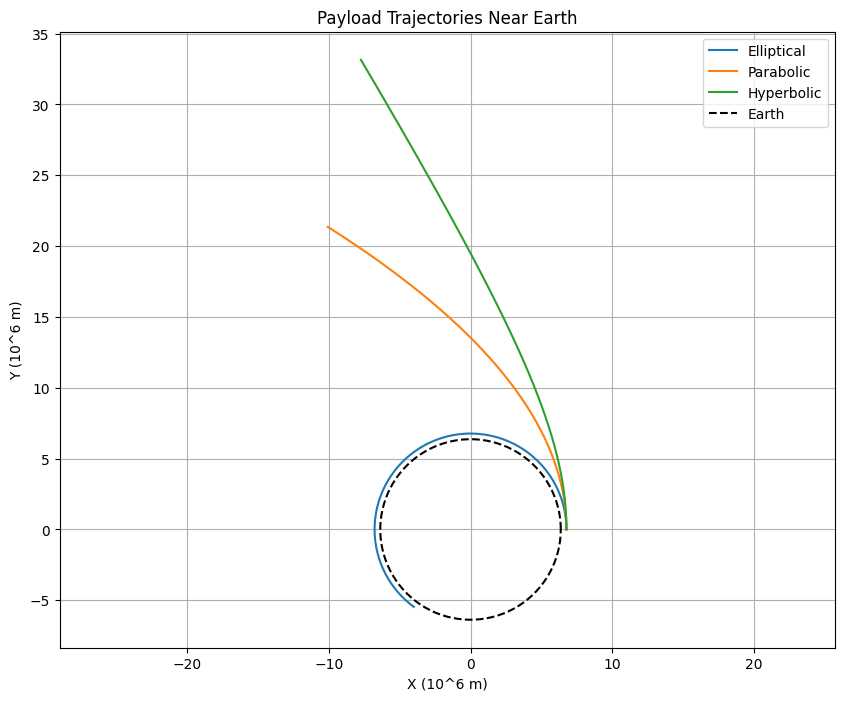
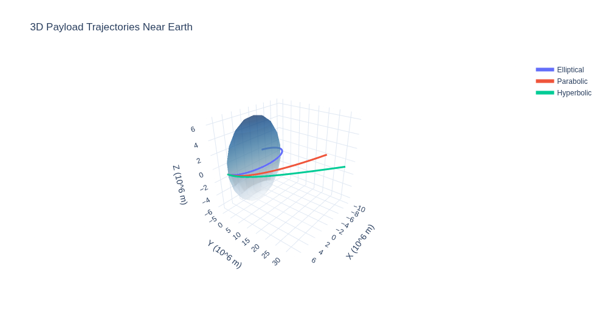
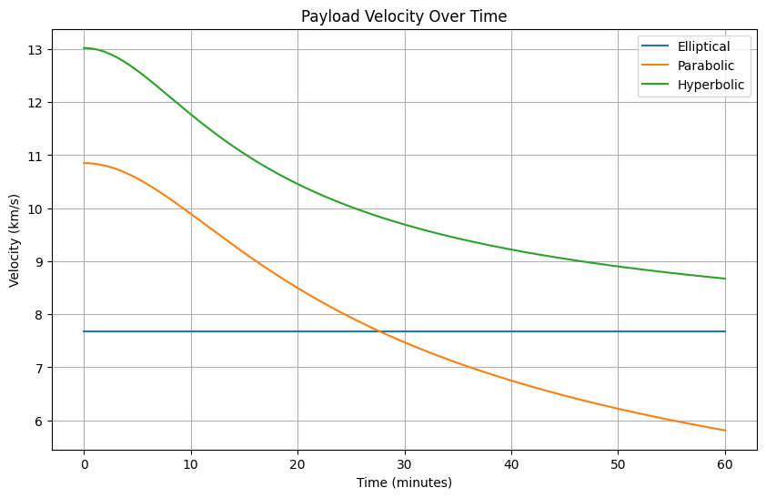

Problem 3
Trajectories of a Freely Released Payload Near Earth
Introduction
Understanding the trajectories of a payload released from a moving rocket near Earth is essential for space mission planning, including satellite deployment, orbital insertion, and reentry. The payload’s path—whether elliptical, parabolic, or hyperbolic—depends on its initial position, velocity, and Earth’s gravitational field. This analysis leverages Newton’s law of gravitation and numerical methods to compute and visualize these trajectories, offering insights into orbital mechanics and space exploration. Tailored for physics students, this document derives the governing equations, performs numerical simulations using Python, and provides interactive 3D visualizations optimized for Google Colab, with code formatted for VS Code and GitHub Pages.
Theoretical Background
Newton’s Law of Gravitation
The gravitational force on a payload of mass \(m\) at position \(\vec{r}\) from Earth’s center (mass \(M = 5.972 \times 10^{24} \, \text{kg}\)) is:
where \(G = 6.67430 \times 10^{-11} \, \text{m}^3 \text{kg}^{-1} \text{s}^{-2}\), and \(|\vec{r}|\) is the distance from Earth’s center.
Equations of Motion
In a two-body system, the payload’s acceleration is:
This second-order differential equation governs the payload’s trajectory, solved numerically given initial position $\vec{r}_0 $ and velocity $ \vec{v}_0$.
Trajectory Types
The trajectory depends on the payload’s specific energy \(\epsilon\):
- Elliptical Orbit (\(\epsilon < 0\)): Bound orbit, e.g., satellites in stable orbits.
- Parabolic Trajectory (\(\epsilon = 0\)): Marginal escape, velocity equals escape velocity (\(v = \sqrt{\frac{2 G M}{r}}\)).
- Hyperbolic Trajectory (\(\epsilon > 0\)): Unbound, escape from Earth’s gravity.
Orbital Parameters
The eccentricity \(e\) determines the orbit shape:
where $ h = |\vec{r} \times \vec{v}|$ is the specific angular momentum. - \(e < 1\): Elliptical. - \(e = 1\): Parabolic. - \(e > 1\): Hyperbolic.
Numerical Analysis
To compute the payload’s path, we solve the equations of motion using numerical integration (e.g., scipy.integrate.odeint). Initial conditions are set at an altitude above Earth’s surface (\(R = 6.371 \times 10^6 \, \text{m}\)) with varying velocities to produce elliptical, parabolic, and hyperbolic trajectories.
Initial Conditions
- Position: Released at \(\vec{r}_0 = (R + h, 0)\), where $h = 400 $, \(\text{km}\) (LEO altitude).
- Velocity:
- Elliptical: \(\vec{v}_0 = (0, v_1)\), where $ v_1 = \sqrt{\frac{G M}{r}} \approx 7.67$, \(\text{km/s}\) (circular orbit velocity).
- Parabolic: \(\vec{v}_0 = (0, v_e)\), where \(v_e = \sqrt{\frac{2 G M}{r}} \approx 10.85\), \(\text{km/s}\) (escape velocity).
- Hyperbolic: \(\vec{v}_0 = (0, 1.2 v_e) \approx 13.02\), \(\text{km/s}\).
Relation to Space Missions
- Orbital Insertion: Elliptical trajectories are used for satellites entering stable orbits (e.g., Starlink at 550 km).
- Reentry: Payloads with sub-orbital velocities follow elliptical paths that intersect Earth’s atmosphere, as in SpaceX Crew Dragon returns.
- Escape: Hyperbolic trajectories enable interplanetary missions (e.g., Voyager 2 escaping Earth’s gravity).
Computational Model with 3D Visualizations
The Python script simulates the payload’s motion for elliptical, parabolic, and hyperbolic trajectories, generating a 2D trajectory plot, a 3D interactive plot, and a velocity-time plot. It’s optimized for Google Colab, with outputs downloadable for GitHub Pages.
# Install libraries in Colab
!pip install numpy scipy matplotlib plotly
import numpy as np
from scipy.integrate import odeint
import matplotlib.pyplot as plt
import plotly.graph_objects as go
# Constants
G = 6.67430e-11 # m^3 kg^-1 s^-2
M = 5.972e24 # kg (Earth's mass)
R = 6.371e6 # m (Earth's radius)
h = 400e3 # m (altitude)
r0 = R + h # m (initial radial distance)
# Equations of motion
def equations(state, t):
x, y, vx, vy = state
r = np.sqrt(x**2 + y**2)
ax = -G * M * x / r**3
ay = -G * M * y / r**3
return [vx, vy, ax, ay]
# Initial conditions
v_circular = np.sqrt(G * M / r0) / 1000 # km/s
v_escape = np.sqrt(2 * G * M / r0) / 1000 # km/s
v_hyper = 1.2 * v_escape # km/s
# Simulation parameters
t = np.linspace(0, 3600, 1000) # 1 hour
initial_conditions = [
([r0, 0, 0, v_circular*1000], 'Elliptical'),
([r0, 0, 0, v_escape*1000], 'Parabolic'),
([r0, 0, 0, v_hyper*1000], 'Hyperbolic')
]
# Solve trajectories
trajectories = []
for ic, label in initial_conditions:
sol = odeint(equations, ic, t)
trajectories.append((sol, label))
# 2D Trajectory Plot
plt.figure(figsize=(10, 8))
for sol, label in trajectories:
x, y = sol[:, 0] / 1e6, sol[:, 1] / 1e6
plt.plot(x, y, label=label)
# Plot Earth
theta = np.linspace(0, 2*np.pi, 100)
plt.plot(R/1e6 * np.cos(theta), R/1e6 * np.sin(theta), 'k--', label='Earth')
plt.xlabel('X (10^6 m)')
plt.ylabel('Y (10^6 m)')
plt.title('Payload Trajectories Near Earth')
plt.legend()
plt.grid(True)
plt.axis('equal')
plt.savefig('trajectories_2d.png', dpi=300)
plt.show()
# 3D Trajectory Plot
fig = go.Figure()
for sol, label in trajectories:
x, y = sol[:, 0] / 1e6, sol[:, 1] / 1e6
z = np.zeros_like(x) # 2D plane for simplicity
fig.add_trace(go.Scatter3d(
x=x, y=y, z=z, mode='lines', name=label,
line=dict(width=6)
))
# Add Earth
u, v = np.mgrid[0:2*np.pi:20j, 0:np.pi:10j]
x_earth = R/1e6 * np.cos(u) * np.sin(v)
y_earth = R/1e6 * np.sin(u) * np.sin(v)
z_earth = R/1e6 * np.cos(v)
fig.add_trace(go.Surface(
x=x_earth, y=y_earth, z=z_earth,
colorscale='Blues', showscale=False, opacity=0.5
))
fig.update_layout(
title='3D Payload Trajectories Near Earth',
scene=dict(
xaxis_title='X (10^6 m)',
yaxis_title='Y (10^6 m)',
zaxis_title='Z (10^6 m)',
aspectmode='cube'
),
template='plotly_white'
)
fig.write_html('trajectories_3d.html')
fig.show()
# Velocity Plot
plt.figure(figsize=(10, 6))
for sol, label in trajectories:
vx, vy = sol[:, 2] / 1000, sol[:, 3] / 1000
v = np.sqrt(vx**2 + vy**2)
plt.plot(t/60, v, label=label)
plt.xlabel('Time (minutes)')
plt.ylabel('Velocity (km/s)')
plt.title('Payload Velocity Over Time')
plt.legend()
plt.grid(True)
plt.savefig('velocity_time.png', dpi=300)
plt.show()
Results
- Initial Velocities:
- Elliptical: \(7.67 \, \text{km/s}\) (circular orbit).
- Parabolic: \(10.85 \, \text{km/s}\) (escape velocity).
- Hyperbolic: \(13.02 \, \text{km/s}\) (1.2 × escape).
- Trajectories:
- Elliptical: Closed orbit, suitable for satellites.
- Parabolic: Marginal escape, boundary case.
- Hyperbolic: Unbound, for interplanetary missions.
Visualizations
- 2D Trajectory Plot :
- Shows all trajectories with Earth’s surface, highlighting orbit shapes.
- Velocity Plot :
- Tracks velocity changes, with hyperbolic showing sustained high speed.
- 3D Trajectories :
- Interactive plot with Earth as a 3D surface, enhancing visualization of paths.
Practical Considerations
- Atmospheric Effects: Ignored here; real reentry includes drag.
- Numerical Accuracy:
odeintensures precise integration. - Simplifications: Two-body problem; ignores Moon, Sun perturbations.
- Applications: Guides satellite deployment, reentry planning, and mission design.
Conclusion
The trajectories of a freely released payload near Earth—elliptical, parabolic, or hyperbolic—depend on initial velocity, governed by gravitational dynamics. Numerical simulations and 3D visualizations provide a professional, interactive tool for physics students, optimized for Colab and GitHub Pages, enhancing understanding of orbital mechanics and space mission planning.